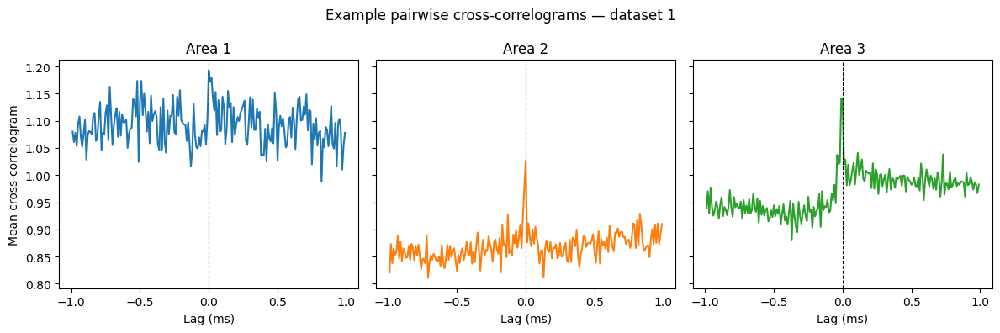
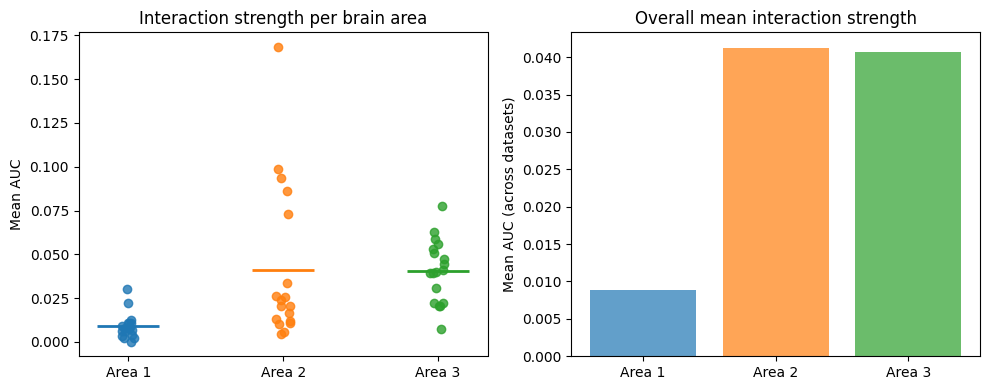

Question 2: Pairwise Spike Train Interactions#
In which brain area are pairwise spike train interactions strongest at the 100 ms timescale?
Approach#
We compute pairwise cross-correlograms between spike trains within each brain area and use the mean cross-correlogram value as a proxy for interaction strength. Statistical comparisons across areas use the Kruskal-Wallis test, with post-hoc Mann-Whitney U tests and Bonferroni correction.
Setup#
%matplotlib inline
from pynwb import NWBHDF5IO
from dandi.dandiapi import DandiAPIClient
import lindi
import pynapple as nap
from matplotlib import pyplot as plt
import numpy as np
import pandas as pd
from scipy.stats import kruskal, mannwhitneyu
from itertools import combinations
dandiset_id = "218201"
Cross-correlograms per brain area#
For each dataset, we load spike trains and compute normalized pairwise cross-correlograms within each brain area using a 10 ms bin and a ±100 ms window. The mean value across all pairs serves as the area-level interaction score (AUC).
auc = {}
cc_example = {} # store cross-correlograms for dataset 1
for dataset_num in range(1, 19):
filepath = f"sub-mouse-{dataset_num}/sub-mouse-{dataset_num}_ses-None_ecephys.nwb"
with DandiAPIClient(api_url="https://api.sandbox.dandiarchive.org/api") as client:
asset = client.get_dandiset(dandiset_id, "draft").get_asset_by_path(filepath)
s3_url = asset.get_content_url(follow_redirects=1, strip_query=True)
f = lindi.LindiH5pyFile.from_hdf5_file(s3_url, local_cache=lindi.LocalCache())
io = NWBHDF5IO(file=f)
spikes = nap.NWBFile(io.read())["units"]
auc[dataset_num] = []
for area in [1, 2, 3]:
cc = nap.compute_crosscorrelogram(
spikes[spikes.brain_area == area],
binsize=0.01,
windowsize=1.0,
norm=True
)
smoothed_cc = cc.rolling(window=100, win_type="gaussian", center=True).mean(std=10)
cc2 = cc.values - smoothed_cc.values
cc2 = pd.DataFrame(cc2, index=cc.index, columns=cc.columns)
auc[dataset_num].append(cc2.loc[-0.1:0.1].mean(0).values)
if dataset_num == 1:
cc_example[area] = cc
fig, axes = plt.subplots(1, 3, figsize=(12, 4), sharey=True)
for i, area in enumerate([1, 2, 3]):
cc = cc_example[area]
axes[i].plot(cc.iloc[:,0], color=f"C{i}")
axes[i].axvline(0, color="k", linestyle="--", linewidth=0.8)
axes[i].set_xlabel("Lag (ms)")
axes[i].set_title(f"Area {area}")
if i == 0:
axes[i].set_ylabel("Mean cross-correlogram")
fig.suptitle("Example pairwise cross-correlograms — dataset 1")
plt.tight_layout()
plt.show()

Kruskal-Wallis test#
We test whether interaction strength differs significantly across the three brain areas using the non-parametric Kruskal-Wallis test.
rows = []
for dataset_num in range(1, 19):
kruskal_result = kruskal(*auc[dataset_num])
print(f"Dataset {dataset_num}: Kruskal-Wallis p-value = {kruskal_result.pvalue:.4f}")
# When the Kruskal-Wallis test is significant, we run Mann-Whitney U tests for each pair of areas and apply Bonferroni correction for multiple comparisons.
area_pairs = list(combinations([1, 2, 3], 2))
n_comparisons = len(area_pairs)
for area1, area2 in area_pairs:
u_stat, p_val = mannwhitneyu(auc[dataset_num][area1 - 1], auc[dataset_num][area2 - 1])
p_corrected = min(p_val * n_comparisons, 1.0)
if kruskal_result.pvalue < 0.05:
print(
f" Post-hoc area {area1} vs area {area2}: "
f"U={u_stat:.1f}, p={p_val:.4f}, p_corrected={p_corrected:.4f}"
)
# We store per-dataset statistics — Kruskal-Wallis results, mean AUC per area, and all pairwise test outcomes — into a DataFrame.
row = {
"dataset": dataset_num,
"kruskal_statistic": kruskal_result.statistic,
"kruskal_pvalue": kruskal_result.pvalue,
"kruskal_significant": kruskal_result.pvalue < 0.05,
"mean_auc_area1": np.mean(auc[dataset_num][0]),
"mean_auc_area2": np.mean(auc[dataset_num][1]),
"mean_auc_area3": np.mean(auc[dataset_num][2]),
"strongest_area": int(np.argmax([np.mean(a) for a in auc[dataset_num]]) + 1),
}
for area1, area2 in area_pairs:
u_stat, p_val = mannwhitneyu(auc[dataset_num][area1 - 1], auc[dataset_num][area2 - 1])
p_corrected = min(p_val * n_comparisons, 1.0)
col_prefix = f"area{area1}_vs_area{area2}"
row[f"{col_prefix}_u"] = u_stat
row[f"{col_prefix}_p"] = p_val
row[f"{col_prefix}_p_corrected"] = p_corrected
row[f"{col_prefix}_significant"] = p_corrected < 0.05
rows.append(row)
results_df = pd.DataFrame(rows).set_index("dataset")
print(results_df)
Dataset 1: Kruskal-Wallis p-value = 0.0000
Post-hoc area 1 vs area 2: U=98253.0, p=0.0000, p_corrected=0.0000
Post-hoc area 1 vs area 3: U=8938.0, p=0.0001, p_corrected=0.0002
Post-hoc area 2 vs area 3: U=2517.0, p=0.7760, p_corrected=1.0000
Dataset 2: Kruskal-Wallis p-value = 0.0000
Post-hoc area 1 vs area 2: U=64099.0, p=0.0039, p_corrected=0.0116
Post-hoc area 1 vs area 3: U=50261.0, p=0.0000, p_corrected=0.0000
Post-hoc area 2 vs area 3: U=14307.0, p=0.0503, p_corrected=0.1510
Dataset 3: Kruskal-Wallis p-value = 0.0000
Post-hoc area 1 vs area 2: U=91193.0, p=0.0000, p_corrected=0.0000
Post-hoc area 1 vs area 3: U=12247.0, p=0.0000, p_corrected=0.0000
Post-hoc area 2 vs area 3: U=7262.0, p=0.0000, p_corrected=0.0001
Dataset 4: Kruskal-Wallis p-value = 0.0000
Post-hoc area 1 vs area 2: U=662.0, p=0.0000, p_corrected=0.0000
Post-hoc area 1 vs area 3: U=38922.0, p=0.7135, p_corrected=1.0000
Post-hoc area 2 vs area 3: U=1902.0, p=0.0000, p_corrected=0.0000
Dataset 5: Kruskal-Wallis p-value = 0.0000
Post-hoc area 1 vs area 2: U=1641126.0, p=0.0000, p_corrected=0.0000
Post-hoc area 1 vs area 3: U=41877.0, p=0.0000, p_corrected=0.0000
Post-hoc area 2 vs area 3: U=35589.0, p=0.0000, p_corrected=0.0000
Dataset 6: Kruskal-Wallis p-value = 0.0000
Post-hoc area 1 vs area 2: U=58217.0, p=0.0000, p_corrected=0.0000
Post-hoc area 1 vs area 3: U=8272.0, p=0.0007, p_corrected=0.0021
Post-hoc area 2 vs area 3: U=5264.0, p=0.1015, p_corrected=0.3044
Dataset 7: Kruskal-Wallis p-value = 0.0000
Post-hoc area 1 vs area 2: U=104264.0, p=0.0000, p_corrected=0.0000
Post-hoc area 1 vs area 3: U=54001.0, p=0.0000, p_corrected=0.0000
Post-hoc area 2 vs area 3: U=41507.0, p=0.0000, p_corrected=0.0000
Dataset 8: Kruskal-Wallis p-value = 0.0000
Post-hoc area 1 vs area 2: U=97171.0, p=0.0000, p_corrected=0.0000
Post-hoc area 1 vs area 3: U=38808.0, p=0.0000, p_corrected=0.0000
Post-hoc area 2 vs area 3: U=48047.0, p=0.0000, p_corrected=0.0000
Dataset 9: Kruskal-Wallis p-value = 0.0000
Post-hoc area 1 vs area 2: U=76336.0, p=0.0000, p_corrected=0.0000
Post-hoc area 1 vs area 3: U=328188.0, p=0.0000, p_corrected=0.0000
Post-hoc area 2 vs area 3: U=385312.0, p=0.0000, p_corrected=0.0000
Dataset 10: Kruskal-Wallis p-value = 0.0000
Post-hoc area 1 vs area 2: U=320.0, p=0.0001, p_corrected=0.0002
Post-hoc area 1 vs area 3: U=4199.0, p=0.0000, p_corrected=0.0000
Post-hoc area 2 vs area 3: U=514.0, p=0.1044, p_corrected=0.3133
Dataset 11: Kruskal-Wallis p-value = 0.0000
Post-hoc area 1 vs area 2: U=44892.0, p=0.2599, p_corrected=0.7797
Post-hoc area 1 vs area 3: U=6972.0, p=0.0000, p_corrected=0.0000
Post-hoc area 2 vs area 3: U=38613.0, p=0.0000, p_corrected=0.0000
Dataset 12: Kruskal-Wallis p-value = 0.0000
Post-hoc area 1 vs area 2: U=2685.0, p=0.0000, p_corrected=0.0000
Post-hoc area 1 vs area 3: U=1866.0, p=0.0000, p_corrected=0.0000
Post-hoc area 2 vs area 3: U=1338.0, p=0.0131, p_corrected=0.0394
Dataset 13: Kruskal-Wallis p-value = 0.0000
Post-hoc area 1 vs area 2: U=139985.0, p=0.0000, p_corrected=0.0000
Post-hoc area 1 vs area 3: U=60635.0, p=0.0000, p_corrected=0.0000
Post-hoc area 2 vs area 3: U=26558.0, p=0.1330, p_corrected=0.3990
Dataset 14: Kruskal-Wallis p-value = 0.0000
Post-hoc area 1 vs area 2: U=1022.0, p=0.0000, p_corrected=0.0000
Post-hoc area 1 vs area 3: U=10911.0, p=0.0075, p_corrected=0.0226
Post-hoc area 2 vs area 3: U=4830.0, p=0.0000, p_corrected=0.0000
Dataset 15: Kruskal-Wallis p-value = 0.0000
Post-hoc area 1 vs area 2: U=20453.0, p=0.0234, p_corrected=0.0703
Post-hoc area 1 vs area 3: U=1968.0, p=0.0000, p_corrected=0.0000
Post-hoc area 2 vs area 3: U=14477.0, p=0.0000, p_corrected=0.0000
Dataset 16: Kruskal-Wallis p-value = 0.0004
Post-hoc area 1 vs area 2: U=460725.0, p=0.0001, p_corrected=0.0004
Post-hoc area 1 vs area 3: U=13205.0, p=0.1485, p_corrected=0.4455
Post-hoc area 2 vs area 3: U=6307.0, p=0.4440, p_corrected=1.0000
Dataset 17: Kruskal-Wallis p-value = 0.0000
Post-hoc area 1 vs area 2: U=120302.0, p=0.0470, p_corrected=0.1411
Post-hoc area 1 vs area 3: U=67001.0, p=0.0000, p_corrected=0.0000
Post-hoc area 2 vs area 3: U=249731.0, p=0.0000, p_corrected=0.0000
Dataset 18: Kruskal-Wallis p-value = 0.0006
Post-hoc area 1 vs area 2: U=7559.0, p=0.0001, p_corrected=0.0003
Post-hoc area 1 vs area 3: U=2359.0, p=0.0221, p_corrected=0.0664
Post-hoc area 2 vs area 3: U=7775.0, p=0.8055, p_corrected=1.0000
kruskal_statistic kruskal_pvalue kruskal_significant \
dataset
1 166.499017 7.001610e-37 True
2 29.566896 3.798658e-07 True
3 231.973867 4.241453e-51 True
4 31.691696 1.312912e-07 True
5 134.118413 7.525869e-30 True
6 29.468240 3.990737e-07 True
7 204.441248 4.037821e-45 True
8 173.595356 2.014872e-38 True
9 966.662640 1.235591e-210 True
10 70.091002 6.024656e-16 True
11 53.720064 2.161904e-12 True
12 68.620137 1.256975e-15 True
13 591.395438 3.802877e-129 True
14 69.496848 8.108700e-16 True
15 70.382918 5.206471e-16 True
16 15.893460 3.538173e-04 True
17 42.699435 5.344849e-10 True
18 14.901422 5.810283e-04 True
mean_auc_area1 mean_auc_area2 mean_auc_area3 strongest_area \
dataset
1 0.002406 0.025757 0.020548 2
2 0.008925 0.012074 0.022200 3
3 0.003357 0.020661 0.077531 3
4 0.022018 0.086035 0.020366 2
5 0.006222 0.004269 0.039865 3
6 0.007827 0.026391 0.040761 3
7 0.006821 0.023726 0.058563 3
8 0.002263 0.011012 0.047130 3
9 0.008268 0.098876 0.053009 2
10 0.012513 0.093842 0.050833 2
11 0.007425 0.005537 0.056066 3
12 0.000177 0.020273 0.039192 3
13 0.010491 0.072967 0.062893 2
14 0.029996 0.168340 0.007262 2
15 0.010866 0.012956 0.039166 3
16 0.004109 0.009951 0.022069 3
17 0.010788 0.016519 0.044689 3
18 0.006009 0.033360 0.030763 2
area1_vs_area2_u area1_vs_area2_p area1_vs_area2_p_corrected \
dataset
1 98253.0 2.003981e-35 6.011944e-35
2 64099.0 3.878521e-03 1.163556e-02
3 91193.0 1.472726e-39 4.418178e-39
4 662.0 2.503369e-08 7.510108e-08
5 1641126.0 9.161006e-24 2.748302e-23
6 58217.0 2.807653e-06 8.422960e-06
7 104264.0 7.700036e-18 2.310011e-17
8 97171.0 9.292726e-13 2.787818e-12
9 76336.0 8.383708e-141 2.515113e-140
10 320.0 6.243525e-05 1.873058e-04
11 44892.0 2.599132e-01 7.797395e-01
12 2685.0 4.075520e-10 1.222656e-09
13 139985.0 1.533097e-114 4.599292e-114
14 1022.0 7.957387e-13 2.387216e-12
15 20453.0 2.344300e-02 7.032899e-02
16 460725.0 1.488329e-04 4.464986e-04
17 120302.0 4.701748e-02 1.410525e-01
18 7559.0 8.740863e-05 2.622259e-04
area1_vs_area2_significant area1_vs_area3_u area1_vs_area3_p \
dataset
1 True 8938.0 7.408156e-05
2 True 50261.0 4.409146e-07
3 True 12247.0 3.060412e-19
4 True 38922.0 7.134890e-01
5 True 41877.0 2.549417e-08
6 True 8272.0 7.146346e-04
7 True 54001.0 1.109970e-38
8 True 38808.0 2.739325e-34
9 True 328188.0 2.563804e-138
10 True 4199.0 1.717553e-14
11 False 6972.0 3.281069e-06
12 True 1866.0 1.772387e-11
13 True 60635.0 6.141992e-26
14 True 10911.0 7.524296e-03
15 False 1968.0 1.317953e-12
16 True 13205.0 1.484918e-01
17 False 67001.0 3.800107e-08
18 True 2359.0 2.211852e-02
area1_vs_area3_p_corrected area1_vs_area3_significant \
dataset
1 2.222447e-04 True
2 1.322744e-06 True
3 9.181235e-19 True
4 1.000000e+00 False
5 7.648250e-08 True
6 2.143904e-03 True
7 3.329910e-38 True
8 8.217974e-34 True
9 7.691413e-138 True
10 5.152660e-14 True
11 9.843208e-06 True
12 5.317162e-11 True
13 1.842598e-25 True
14 2.257289e-02 True
15 3.953858e-12 True
16 4.454754e-01 False
17 1.140032e-07 True
18 6.635556e-02 False
area2_vs_area3_u area2_vs_area3_p area2_vs_area3_p_corrected \
dataset
1 2517.0 7.759902e-01 1.000000e+00
2 14307.0 5.034092e-02 1.510227e-01
3 7262.0 3.527795e-05 1.058339e-04
4 1902.0 4.164503e-08 1.249351e-07
5 35589.0 1.613311e-10 4.839932e-10
6 5264.0 1.014613e-01 3.043839e-01
7 41507.0 4.513115e-13 1.353934e-12
8 48047.0 5.173509e-17 1.552053e-16
9 385312.0 2.856928e-25 8.570783e-25
10 514.0 1.044323e-01 3.132968e-01
11 38613.0 3.884658e-13 1.165397e-12
12 1338.0 1.312365e-02 3.937095e-02
13 26558.0 1.330161e-01 3.990483e-01
14 4830.0 6.625341e-15 1.987602e-14
15 14477.0 1.013381e-14 3.040143e-14
16 6307.0 4.439614e-01 1.000000e+00
17 249731.0 4.953667e-08 1.486100e-07
18 7775.0 8.055146e-01 1.000000e+00
area2_vs_area3_significant
dataset
1 False
2 False
3 True
4 True
5 True
6 False
7 True
8 True
9 True
10 False
11 True
12 True
13 False
14 True
15 True
16 False
17 True
18 False
Summary#
We tally which area is the strongest most frequently across datasets, and compute the overall mean AUC per area.
strongest_counts = results_df["strongest_area"].value_counts()
print(strongest_counts.to_string())
overall_mean = {
1: results_df["mean_auc_area1"].mean(),
2: results_df["mean_auc_area2"].mean(),
3: results_df["mean_auc_area3"].mean(),
}
best_area = max(overall_mean, key=overall_mean.get)
print(f"Overall mean AUC — Area 1: {overall_mean[1]:.4f}, Area 2: {overall_mean[2]:.4f}, Area 3: {overall_mean[3]:.4f}")
strongest_area
3 11
2 7
Overall mean AUC — Area 1: 0.0089, Area 2: 0.0413, Area 3: 0.0407
fig, axes = plt.subplots(1, 2, figsize=(10, 4))
# Scatter of mean AUC per area across datasets
data_to_plot = [results_df["mean_auc_area1"], results_df["mean_auc_area2"], results_df["mean_auc_area3"]]
for j, (data, color) in enumerate(zip(data_to_plot, ["C0", "C1", "C2"])):
x = np.full(len(data), j + 1) + np.random.uniform(-0.05, 0.05, len(data))
axes[0].scatter(x, data, color=color, alpha=0.8, zorder=3)
axes[0].hlines(np.mean(data), j + 0.8, j + 1.2, color=color, linewidth=2)
axes[0].set_xticks([1, 2, 3])
axes[0].set_xticklabels(["Area 1", "Area 2", "Area 3"])
axes[0].set_ylabel("Mean AUC")
axes[0].set_title("Interaction strength per brain area")
# Bar chart of overall mean AUC
axes[1].bar(["Area 1", "Area 2", "Area 3"],
[overall_mean[1], overall_mean[2], overall_mean[3]],
color=["C0", "C1", "C2"], alpha=0.7)
axes[1].set_ylabel("Mean AUC (across datasets)")
axes[1].set_title("Overall mean interaction strength")
plt.tight_layout()
plt.show()

Answer#
print(f"Brain area {best_area} has the strongest pairwise spike train interactions at the 100 ms timescale.")
Brain area 2 has the strongest pairwise spike train interactions at the 100 ms timescale.